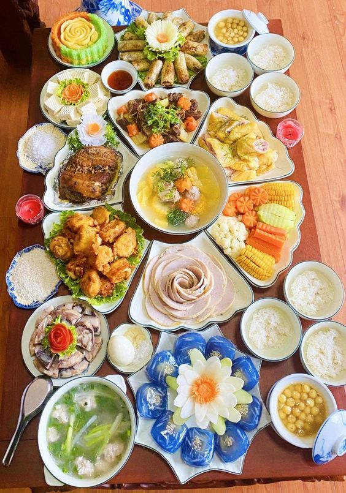
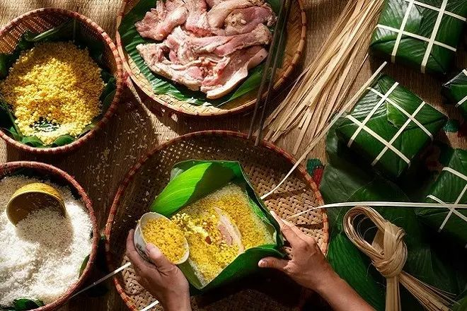
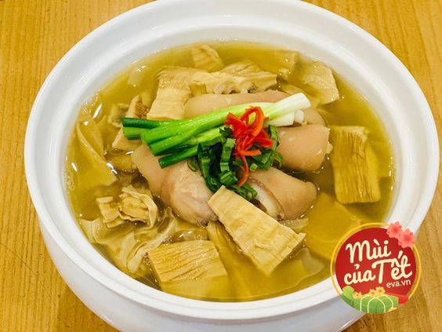
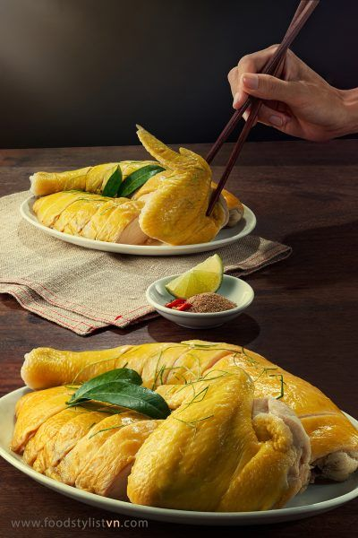
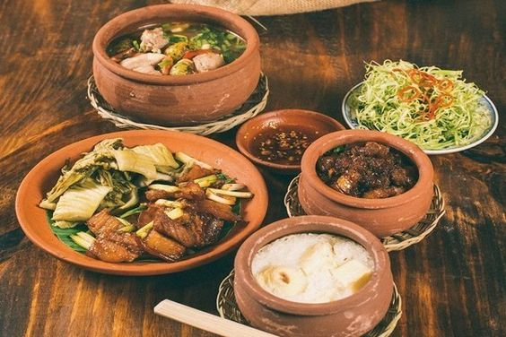
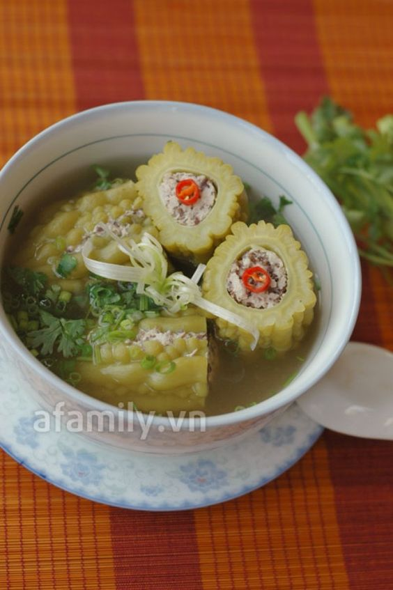

VIETNAMFOOD
VIETNAMFOOD
VIETNAMFOOD
VIETNAMFOOD
3/2/2024 15:27 GMT+7
Tết cổ truyền được xem là một ngày lễ truyền thống vô cùng quan trọng của tất cả người dân Việt Nam. Dịp Tết còn mang trong mình nét đặc trưng riêng của nền văn hóa Việt, đây cũng là dịp đặc biệt để tất cả các thành viên trong gia đình quây quần, sum họp bên nhau. Chính vì vậy mà mỗi khi Tết đến xuân về thì những mâm cơm ngày Tết với nhiều món ăn truyền thống ngày Tết cũng vô cùng quan trọng.
10 món ăn truyền thống ngày Tết cổ truyền của người dân Việt Nam
Ông bà ta thường hay có câu: “ Thịt mỡ, dưa hành, câu đối đỏ - Cây nêu, tràng pháo, bánh chưng xanh” hay câu nói “ Thấy bánh chưng là thấy Tết”. Vào dịp Tết đến thì dù cho bạn có đi đâu, ở đâu đi chăng nữa thì một món ăn quan trọng không thể thiếu trong mâm cơm ngày Tết chính là bánh chưng, bánh tét. Trong tâm trí của tất cả người dân Việt Nam dù là trẻ em hay người lớn thì bánh chưng là món ăn mang đậm bản sắc dân tộc Việt, bánh chưng còn mang ý nghĩa sâu xa là “ Uống nước nhớ nguồn” và đặc biệt là chúng còn mang biết bao nhiêu kỷ niệm thời thơ ấu của mỗi người.
Tương tự như bánh chưng thì bánh tét cũng là món ăn vô cùng quan trọng ngày Tết. Bánh tét mang ý nghĩa thương nhớ người đã khuất, cầu chúc sự bình an, ấm no cho năm mới. Bánh tét hay bánh chưng đều được bọc trong nhiều lớp lá dong/ lá chuối còn tượng trưng cho việc mẹ bao bọc lấy con và mong muốn sum vầy của tất cả mọi người sau một năm dài làm việc xa nhà. Bên cạnh đó, bánh tét – bánh chưng với phần nhân đậu xanh màu vàng còn gợi nhớ cho người nông dân hình ảnh cánh đồng lúa chín bội thu cùng niềm mơ ước an cư lạc nghiệp, đất nước thái bình, hạnh phúc.
Bánh chưng món ăn truyền thống ngày Tết cổ truyền của người dân Việt Nam
Một trong những món ăn truyền thống ngày Tết miền Trung được nhiều người yêu thích đó chính là dưa hành. Mâm cơm ngày Tết thường sẽ mang hàm ý mong cả năm mới hạnh phúc, ấm no, sung tuc vậy nên thường được người dân Việt chuẩn bị kỹ lưỡng nhất từ những món ăn cao lương mỹ vị cho đến những món ăn bình dân, giản dị, đời thường. Dưa hành thường được muối vào mùa đông, khi những củ hành vừa được thu hoạch từ vụ mùa để có thể đúng dịp Tết đến là chín vừa tới. chúng có vị chua nhẹ, không bị hăng rất ngon miệng, dễ ăn. Trong mâm cơm ngày Tết của mọi nhà ngoài việc thưởng thức các món ăn béo ngậy như thịt kho tàu, bánh chưng, bánh tét,.. thì chắc chắn không thể nào thiếu được vị chua chua giòn giòn của dưa hành đúng không nào.
Theo quan niệm của người Việt Nam thì trong dịp Tết đến màu đỏ là màu tượng trưng cho sự may mắn, sung túc nên chính vì vậy mà khi Tết đến thì xôi gấc là món ăn không thể thiếu trong mâm cơm được. Màu đỏ của gấc được ví như màu tự nhiên của đất trời nhờ đó sẽ tạo ra sự dung hòa, thuận lợi cho năm mới. Xôi gấc có vị dẻo thơm của hạt lúa nếp cùng vị bùi, béo ngậy từ quả gấc sẽ là món ăn vô cùng lạ miệng trong ngày Tết.
Chả giò lụa được nhiều người biết đến là món ăn truyền thống ngày Tết miền Bắc. Giò lụa được làm nên từ nguyên liệu thịt nạc thăn xay nhuyễn kết hợp cùng nước mắm, được gói cẩn thận trong những lớp lá chuối xanh mướt và được đem đi luộc chín. Giò lụa vừa là món ăn ngon trong mâm cơm thì chúng còn là món ăn giúp những người lớn trong nhà có thể nhâm nhi cùng vài ly bia, ly rượu cùng cười nói vui vẻ trong dịp Tết đến.
Gà luộc là một món ăn không thể nào thiếu trong các mâm cỗ cúng ngày Tết và cả trong những mâm cơm Tết. Theo quan niệm của ông bà ta thì trong 12 con giáp, con gà biểu tượng cho sự mạnh mẽ, cương trực cùng 5 đức tín lớn của con người như: Văn Võ Dũng Nhân Tính. Nhiều người dân Việt Nam có niềm tin rằng nếu họ dâng con gà luộc trong mâm cỗ, mâm cơm ngày Tết hay vào đêm giao thừa sẽ mang đến nhiều sự may mắn cho năm mới.
Thịt đông là món ăn đặc trưng trong mỗi mâm cơm Tết của người dân miền Bắc. Món thịt đông được chế biến vô cùng đơn giản là chỉ cần hầm các loại thịt như chân giò, thịt đùi, thịt gà,… kèm thêm ít mộc nhĩ và chút gia vị cho vừa ăn là được. Thịt đông sẽ có màu nhàn nhạt của thịt sau khi đã được nấu chín, khi đông lại sẽ có lớp váng mỡ trắng mịn trên bề mặt cùng độ béo ngậy, vị mát vô cùng hấp dẫn.
Măng được xem là một nguyên liệu rất phổ biến tại Việt Nam, chúng được dùng để chế biến nên nhiều món ăn thơm ngon, hấp dẫn và sẽ thật là thiếu sót nếu bạn bỏ qua món canh măng khô trong mâm cơm ngày Tết của gia đình. Món canh măng khô có vị đậm đà, nóng hổi sẽ rất thích hợp cho những bữa cơm Tết của người dân miền Bắc trong lúc khí hậu đang se lạnh. Một bát canh măng nóng hổi ăn cùng dưa hành sẽ khiến gia đình bạn mê mẩn ngay.
Trong tất cả các món ăn ngon của Việt Nam thì món thịt kho tàu là một trong những món ăn truyền thống ngày Tết miền Nam được rất nhiều người yêu thích. Chỉ cần có thể cảm nhận được hương thơm hấp dẫn, béo ngậy tỏa ra từ nồi thịt kho tàu nóng hổi cùng chén cơm trắng nóng bốc hơi nghi ngút là bạn đã thấy Tết về rồi. Dù nghe tên có vẻ đơn giản nhưng món thịt kho tàu lại cần có sự chế biến tỉ mỉ từ khâu chọn nguyên liệu, sơ chế, ướp gia vị cho đến lúc kho thịt để có được một dĩa thịt kho đậm đà, đúng chuẩn. Món thịt kho tàu có màu nâu sóng sánh bắt mắt sẽ mang đến cho gia đình bạn một bữa cơm Tết vô cùng ấm cúng.
Canh khổ qua nhồi thịt là món ăn truyền thống ngày Tết luôn luôn hiện diện trong mâm cơm của người miền Nam, miền Trung,.. Đúng như tên gọi của món ăn thì nó hàm chứa ý nghĩa “ Mọi điều không may của năm cũ đã qua, năm mới đến với những điều mới ”. Bên cạnh đó, canh khổ qua nhồi thịt còn rất tốt cho sức khỏe vì khổ qua được xem là bài thuốc giúp thanh nhiệt, mát gan, nhuận trường, hỗ trợ tiêu hóa, kích thích ăn uống và làm đẹp da.
Thịt ngâm mắm là một món ăn truyền thống ngày Tết có vị đậm đà không thể thiếu trong mâm cơm truyền thống ngày Tết của người dân miền Trung. Những miếng thịt được ngâm trong hũ mắm pha đường có vị mặn ngọt vừa ăn, kết hợp cùng vị chua giòn của dưa muối, củ kiệu sẽ khiến bao người mê mẫn. Ngoài là món ăn ngon trong mâm cơm thì thịt ngâm mắm còn là món ăn lý tưởng để cho các chú, các bác trong gia đình có thể thưởng thức khi nhâm nhi cùng vài ly rượu, vài ly bia trong dịp Tết đến. Vào mỗi dịp Tết đến xuân về thì mỗi người dân Việt Nam đều muốn sum vầy, quây quần cùng tất cả người thân trong gia đình để có thể cùng nhau thưởng thức những mâm cơm, những món ăn truyền thống ngày Tết. Những món ăn truyền thống luôn là giá trị tinh thần to lớn không thể nào thiếu cùng với những niềm vui, niềm hạnh phúc, hi vọng gửi gắm cho một năm mới bình hành, sung túc, thịnh vượng, may mắn.

Khi khách hàng cần chúng tôi sẽ có mặt

Hỗ trợ thanh toán online qua Ví điện tử

Thông tin chính xác, kịp thời, đầy đủ
GIỚI THIỆU
QUẢNG CÁO
CHÍNH SÁCH BẢO MẬT
LIÊN HỆ
©2024